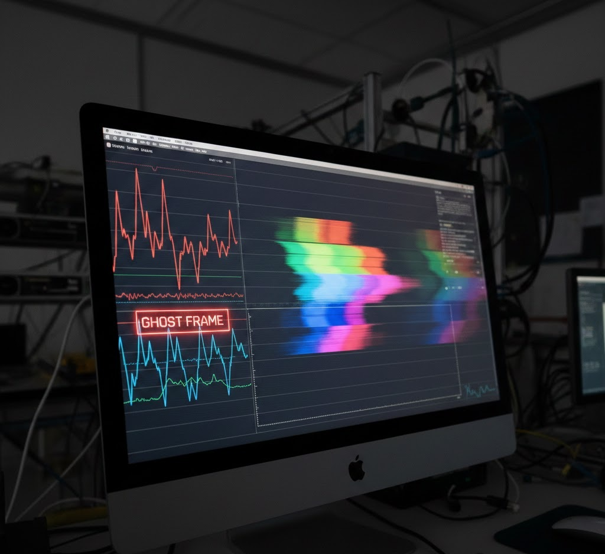

In our testing today at the GearVerify lab, we encountered a strange anomaly: a mid-range laptop
reporting 120 FPS in a rigorous WebGL test, yet the motion looked visibly stuttery, akin to 30 FPS.
The tool counter said 120. The human eye saw 30. This phenomenon is known as "Ghost Frames"—frames
that are dispatched by the engine but never actually rasterized or displayed due to compositor lag.
[0.00s]System Init...[0.10s]Check Complete.[0.12s] Data logging enabled.
This is a growing issue with modern browsers (Chrome/Edge) aggressively using "Hardware Acceleration"
overlays. The browser tells the benchmark "Yes, frame submitted," but the Desktop Window Manager
(DWM) drops it silently.

1. The Presentation Queue
In a perfect world, the queue is Frame 1 -> Frame 2 -> Frame 3. In a Ghost scenario, the GPU is
overloaded, so the compositor reuses the last buffer. The queue logic says Frame 1 -> Frame 1
(Duplicate) -> Frame 2. The FPS counter counts 3 frames. The user only sees 2 distinct images.
[DATA WARNING] - Presentation Interval Mismatch. Application reports 16.6ms intervals, but Display
Scanout detected 33.2ms hold time.
2. Detecting the Faker
GearVerify uses a specialized "tear-check" pattern. We render a high-contrast bar moving at a
mathematically precise speed. If the browser drops a frame or duplicates one, the bar's position
will "jump" or "freeze" relative to the predicted timestamp. We use this mismatch to calculate the
"Effective FPS" vs the "Rendered FPS."
Metric
Description
Target
Rendered FPS
How many frames the GPU computed
As high as possible
Effective FPS
How many unique frames hit the screen
Match Rendered FPS
1% Lows
The frame rate of the slowest 1% of frames
> 60 FPS
3. Browser Compositing Overhead
Running a benchmark in a maximize window often incurs higher latency than "Exclusive Fullscreen"
because the DWM has to compromise with other windows. Windows 11's "Variable Refresh Rate" setting
can also cause desync issues with browser content.
Expert Tip: The F11 Fix
Always press F11 to enter true fullscreen before running any browser diagnostic. This signals the OS
to prioritize the browser's swap chain, reducing the likelihood of compositor-induced ghost frames.
4. Laboratory Final Thoughts
FPS numbers are vanity metrics if the pacing is broken. A smooth 60 FPS is infinitely better than a
ghost-riddled 140 FPS. Trust your eyes, and trust frame-time graphs over raw counters.